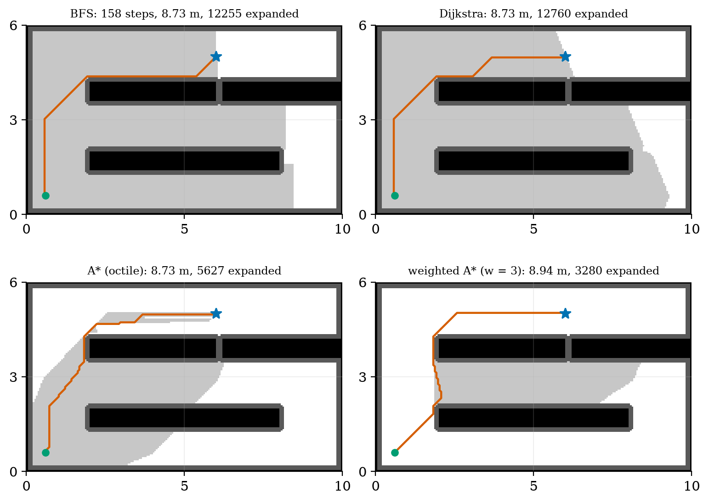
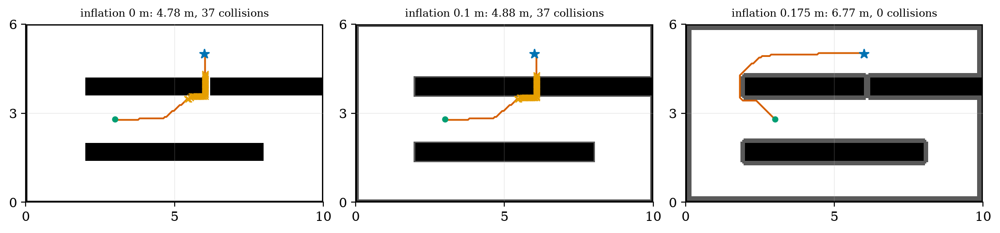
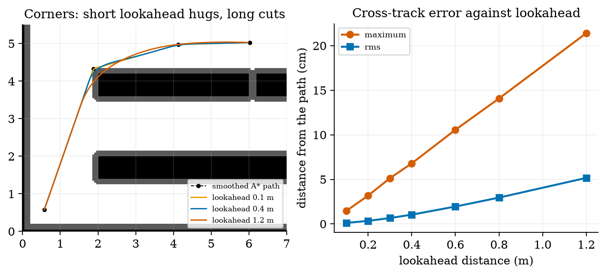
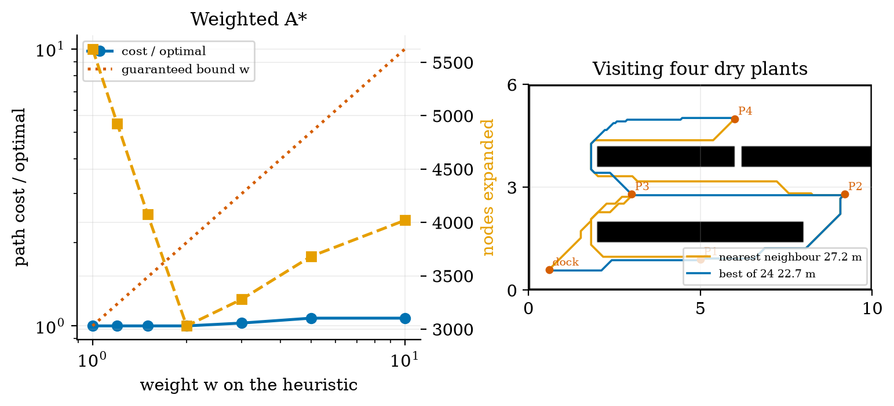
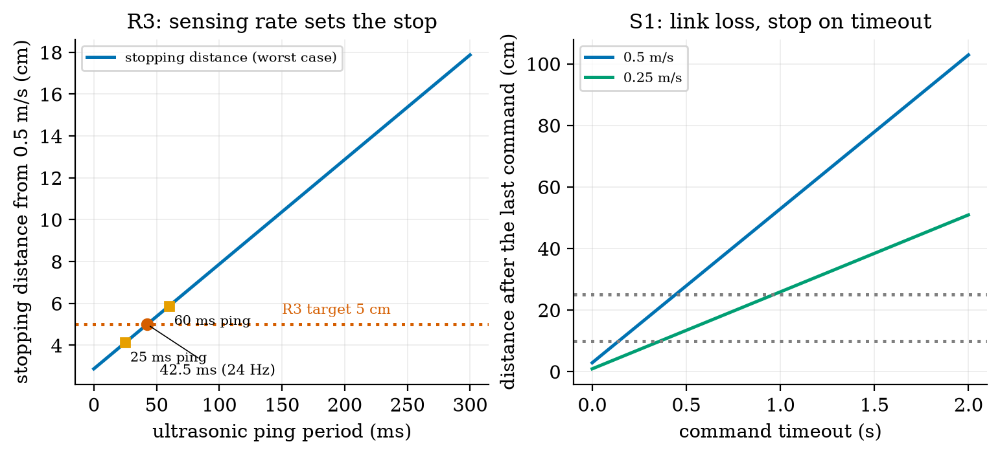
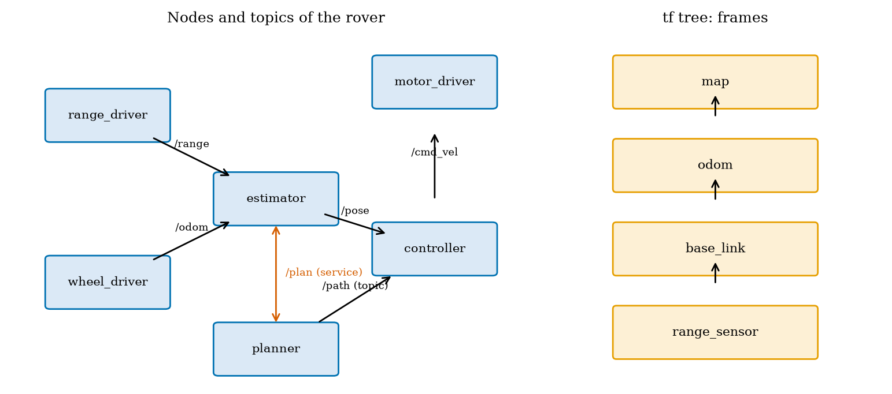

Unit 11 ready
Path Planning, Navigation and ROS: Getting There Safely
BFS, Dijkstra and A*, obstacle inflation, pure pursuit, and the ROS 2 concepts.
Session map
After this session you can:
- turn an occupancy grid into a graph and find a shortest path with breadth-first search, Dijkstra’s algorithm and A*, and explain what makes a heuristic admissible;
- inflate obstacles by the robot’s size, and see what an un-inflated plan does to a robot that is not a point;
- follow a path with pure pursuit, derive its error dynamics, choose the lookahead distance, and choose an order in which to visit several goals;
- compute the stopping and link-loss budgets that decide how fast the ultrasonic sensor must ping and how long a command timeout may be;
- describe the rover as a ROS 2 graph of nodes, topics, a service, an action and a tf tree, and run its message flow on a miniature bus.
- Prerequisites: Unit 8 (frames, SE(2) transforms, the shared rover), Unit 9 (steering law, delay margin, stopping distance), Unit 10 (the occupancy grid, ranges). Basic graph ideas (nodes and edges).
- Difficulty ladder used: easy → medium → medium-hard → hard (Sections 3.1 to 3.4); the hardest tier is posed as open questions in Section 3.5.
- Deliverables: this document (.tex, .pdf, .docx), 6 figures, the module
codes/robotics/planning_np/(bfs,dijkstra,astarwith weights,inflate,shortcut,follow_pathwith pure pursuit on the shared rover,visit_orders, the stopping and watchdog budgets, a miniatureBusandTFTree; 8 tests, the planners cross-checked against networkx), and logs of every printed number. - Source anchors: all algorithms and formulas are derived or checked in the text. Hart, Nilsson and Raphael (1968) and Dijkstra (1959) were not read; the optimality of A* is argued from first principles in Section 3.3 and the planners are checked against networkx’s shortest paths on random grids and on the real map. The ROS 2 definitions (node, topic, service, action, launch file, tf2) were read in the ROS 2 documentation (Jazzy), “Concepts” and the tf2 and launch tutorials, on 2026-10-11; ROS 2 itself is not installed and nothing here ran under it: the miniature bus only imitates the ideas. The greenhouse layout, the rover’s body circle (0.13 m), the margin (2 cm), the friction coefficient 0.6 and the sensor ping period are assumed; the ultrasonic “60 ms minimum cycle” is from memory and was not checked against a datasheet.
1. Terms: the term tree
| Term | Symbol | One-line meaning | Where it appears | New / known |
|---|---|---|---|---|
| occupancy grid | a map as a grid of occupied or free cells (Unit 10) | 3.1 | known | |
| configuration space | the space of all poses the robot can take; obstacles become forbidden regions | 3.1 | new | |
| grid graph | cells as nodes, moves to neighbouring free cells as edges with a cost | 3.1 | new | |
| breadth-first search (BFS) | expands cells in rings of equal step count; finds the fewest steps | 3.1 | new | |
| Dijkstra’s algorithm | expands the cell of smallest cost so far; finds the cheapest path | 3.2 | new | |
| A* search | Dijkstra guided by a heuristic estimate of the cost to go | 3.2 | new | |
| heuristic: admissible, consistent | h | an estimate of cost to go that never overestimates (admissible) and obeys the triangle rule (consistent) | 3.2 | new |
| obstacle inflation | r_{\text{inf}} | growing obstacles by the robot’s radius plus a margin so the robot can be planned as a point | 3.3 | new |
| path smoothing (line of sight) | replacing a staircase of waypoints by long straight segments that stay free | 3.3 | new | |
| weighted A* | w | A* with the heuristic multiplied by w\ge1: faster, at a bounded loss of optimality | 3.3 | new |
| pure pursuit | L_d | steering along the circle that reaches a point a lookahead distance ahead on the path | 3.4 | new |
| lookahead distance | L_d | how far ahead on the path the target point is taken | 3.4 | new |
| cross-track error | e | the distance of the robot from the path | 3.4 | new |
| visiting order | the order in which several goals are visited (a travelling-salesman problem) | 3.4 | new | |
| watchdog (command timeout) | stop automatically when no valid command arrives within a time | 3.4 | new | |
| ROS 2 node | a participant in the ROS 2 graph that communicates through a client library | 3.4 | new | |
| topic, service, action | continuous publish-subscribe stream; remote procedure call; long-running call with feedback and cancel | 3.4 | new | |
| tf (transform tree) | a tree of coordinate frames and the transforms between them | 3.4 | new | |
| launch file | a file that starts and configures many nodes together | 3.4 | new |
Terms used but not taught here: the travelling-salesman problem in general (named; NP-hard stated, not proved), probabilistic roadmaps and RRT (named), the dynamic window approach and potential fields (named), Gazebo and Webots (overview only, Section 6), Nav2 (named).
2. Remember
Planning chooses a sequence of poses from here to a goal that avoids obstacles; navigation adds following the plan and reacting when it fails. The pipeline of the rover: map (Unit 10) → planner (shortest free path) → controller (pure pursuit on the path, Unit 9 wheel loops) → motors.
Every planner here keeps a frontier of cells to expand, a record of the cost to reach each cell (g) and its parent. They differ only in which frontier cell they expand next: the oldest (BFS), the cheapest so far (Dijkstra), the one with the smallest cost-so-far plus estimated cost-to-go (A*).
A heuristic h(n) estimating the cost from n to the goal is admissible if h(n)\le h^*(n), the true cost. It is consistent if h(n)\le c(n,n')+h(n') for every move. With a consistent heuristic A* expands each cell at most once and its first path to the goal is optimal.
Memory hooks.
- BFS counts steps, Dijkstra counts cost, A counts cost and looks toward the goal.*
- A is Dijkstra with a compass.*
- Inflate the world, shrink the robot to a point.
- Pure pursuit chases a carrot a fixed distance ahead; a long carrot cuts corners, a short one oscillates under delay.
- Stopping distance depends on how often the sensor looks.
Before you read on: three predictions (answers in Section 10).
- On the 24000-cell greenhouse map, Dijkstra expands about 12800 cells to find the dock-to-plant path. A* with a good heuristic expands: about 12000, about 6000 or about 500?
- If the planner ignores the rover’s size and the straight route passes through a gap 0.20 m wide (the rover is 0.26 m across), what happens to the robot: it squeezes through, it stops, or it hits the obstacle edges?
- The rover brakes at the traction limit from 0.5 m/s and its edge loop takes 15 ms. The ultrasonic sensor pings every 60 ms. Is the worst-case stopping distance under the 5 cm of requirement R3?
Recall quiz (answers in Section 10).
- Which search finds the path with the fewest steps, and which the path of least cost?
- What does an admissible heuristic guarantee for A*?
- Why inflate obstacles by more than the robot’s radius on a grid of square cells?
- What does the lookahead distance of pure pursuit trade off?
- What is the difference between a ROS 2 topic and a service?
3. Understand: the derivation
3.1 Tier 1 (easy): the map as a graph, and breadth-first search
The occupancy grid of Unit 10 already is a graph in disguise. Take the free cells as nodes and join each cell to its eight neighbours with an edge; the cost of a move is its length: 1 cell for a side move, \sqrt2=1.414 for a diagonal. A diagonal move is allowed only when both side cells it passes are free (no cutting corners; the module’s test checks this). The rover’s configuration is its pose (x,y,\theta); for a round body the heading does not matter for collisions, so the configuration space is the 2-D map once the obstacles have been grown (Section 3.3).
Our test world is a greenhouse of 10 m by 6 m with 5 cm cells (200 by 120 = 24000 cells): two plant beds, a crate that leaves a gap of 0.20 m between bed 2 and the crate, a dock at the lower left and four dry plants (the layout is assumed). The task of Figure 1: from the dock (cell (11, 11)) to plant P4 (cell (100, 120)).
Breadth-first search keeps a first-in-first-out queue. Starting from the dock it expands the cells one step away, then two steps, and so on, like ripples; when the goal is reached the parent pointers give a path with the fewest steps. It treats a diagonal move as one step, so it minimises the number of steps, not the length: on this map it finds 158 steps of total length 8.728 m, which happens to be the shortest. Over 150 random start-goal pairs the BFS path was longer than the optimum in 1 pair, by at most 0.77% (mean ratio 1.0001): nearly equal here because the costs differ only between side and diagonal moves, but not guaranteed (fig01_log.txt). It expands 12255 cells: it has no sense of direction.
3.2 Tier 2 (medium): Dijkstra’s algorithm and A*
Dijkstra’s algorithm replaces the queue by a priority queue ordered by g(n), the cheapest cost found so far to reach n. It always expands the cheapest frontier cell. The first time the goal is expanded, its cost is optimal: any other route would have to pass through a frontier cell that is at least as costly (all edge costs are positive). On the greenhouse map it finds the same 8.728 m path, expanding 12760 cells; the list of cells it opens is the whole disc of cells nearer to the dock than the goal (Figure 1, upper right).
A* orders the frontier by f(n)=g(n)+h(n) with h an estimate of the remaining cost. For 8-connected moves the natural estimate is the octile distance: for offsets (\Delta_1,\Delta_2) cells, take the smaller m=\min and the larger M and h(n)=(M-m)+\sqrt2\,m=(\Delta_1+\Delta_2)+(\sqrt2-2)\min(\Delta_1,\Delta_2). \tag{1} It is the exact cost of a route across an empty map, so it can never overestimate the cost when obstacles are present: it is admissible; and since the exact cost obeys the triangle rule, it is consistent. (For a goal 5 cells right and 3 up: 8-0.586\times3=6.243 cells; the straight-line distance is 5.831, the Manhattan distance 8: too large, and so inadmissible for 8-connected moves.)
Why the first goal expansion is optimal. Let C^* be the optimal cost. At any time some cell n of an optimal path is on the frontier with g(n)=g^*(n), so f(n)=g^*(n)+h(n)\le g^*(n)+h^*(n)=C^*. The goal’s f equals its g (since h=0 there), so it cannot be expanded with g>C^* while such an n waits with f\le C^*. Hence the first time the goal is expanded its cost is C^*. (This is the standard argument; it is written here from first principles and was not checked against the original paper.)
The result (Figure 1): A* with the octile heuristic expands 5627 cells against Dijkstra’s 12760 (2.27 times fewer) and finds the same 8.728 m path; with the straight-line heuristic, also admissible but weaker, it expands 6843. Prediction 1 of Section 2: about 6000. The cells it opens form a narrow band along the way to the goal. All three planners were cross-checked against networkx: the cost of 8.728 m agrees to 10^{-9}, and on 8 random 30 by 30 grids with a quarter of the cells blocked, A* and Dijkstra match the networkx cost every time (or both report that no path exists). With a 4-connected move set the same task costs 9.900 m: allowing diagonals shortens the route by 12%.

Run times in Python were 30 to 70 ms for any of the planners and varied by a factor of two between runs, so only the counts of expanded cells are quoted: they do not depend on the machine.
3.3 Tier 3 (medium-hard): inflation, smoothing and weights
3.3.1 Obstacle inflation
The planners treat the rover as a point; the rover is not. The standard fix: inflate every obstacle by the rover’s radius, so that a point in the inflated map is a safe centre of the real body. Take the rover as contained in a circle of radius 0.13 m (assumed: the half-width 0.10 m of Unit 10 plus body length). On a grid of square 5 cm cells there is a subtlety: our inflation marks every cell whose centre is within r_{\text{inf}} of an occupied cell centre, but the real obstacle is a square, whose face lies half a cell (2.5 cm) nearer. A rover planned with r_{\text{inf}}=0.13 m can therefore come within 0.13-0.025=0.105 m of an obstacle face, which is less than its radius. We take r_{\text{inf}}=r_{\text{rover}}+\tfrac12\,\text{cell}+\text{margin}=0.13+0.025+0.02=0.175\ \text{m}. \tag{2} (Before this correction the module’s own collision check, which tests the disc against the cell squares, caught one sample point of a path inflated by 0.15 m.) The price: the free area of the map falls from 20064 cells to 18830 at 0.10 m and 16396 at 0.175 m (18% less).
The experiment (fig02_inflation.py): from plant P3 to plant P4 the straight way is through the 0.20 m gap between bed 2 and the crate. The gap is 0.20 m wide against the rover’s 0.26 m across. Plan it three ways, then drive the path with the rover’s true disc and count the sample points (every 2.5 cm) at which the disc overlaps an obstacle:
| inflation | path length | sample points in collision | after line-of-sight smoothing |
|---|---|---|---|
| none (point robot) | 4.781 m | 37 of 191 | 4.555 m, 47 collisions |
| 0.10 m | 4.881 m | 37 of 195 | 4.642 m, 41 collisions |
| 0.175 m | 6.771 m | 0 of 270 | 6.548 m, 0 collisions (124 waypoints to 5) |

All four plants stay reachable up to an inflation of 0.30 m on this map: inflation closes the narrow gap but not the aisles.
3.3.2 Path smoothing by line of sight
A grid path is a staircase of 8 directions. The line-of-sight smoother starts at the first waypoint and jumps to the farthest later waypoint it can see along a straight line through free (inflated-map) cells, then repeats from there. The 159-waypoint path from the dock to P4 becomes 4 waypoints, length 8.212 m (against 8.728 m for the grid path), and the result is still collision-free because the lines were tested on the inflated map. The smoothed path is shorter than the 8-direction grid path but is not optimal in general (it is only the best path that uses the grid path’s own waypoints).
3.3.3 Weighted A* and inadmissible heuristics
Multiplying the heuristic by w\ge1, f=g+wh, makes A* greedier: it heads for the goal harder and expands fewer cells. For an admissible h the path found costs at most w\,C^* (stated, not proved here). Measured on dock to P4 (fig03_log.txt): w=1.2 to 2 give the optimal cost with 4926 down to 3031 expansions (46% fewer than 5627); w=3 costs 2.37% more with 3280; w=5 and 10 cost 6.64% more with 3682 and 4021. The bound w is far from tight: at w=10 the loss is 6.6%, not 900%. A heuristic scaled by k is the same thing: 3\times octile gives exactly the w=3 numbers (8.936 m, 3280). It is no longer admissible, so the optimality guarantee is lost; here the answer was still optimal for k=1.5.
3.4 Tier 4 (hard): following, visiting, stopping, and the ROS 2 graph
3.4.1 Pure pursuit
A path is a list of points; the rover needs commands. Pure pursuit picks the point on the path a distance L_d ahead of the rover (the lookahead distance, the “carrot”) and steers along the circle that is tangent to the rover’s heading and passes through it. In the rover frame the target is at (x,y) with L^2=x^2+y^2; the circle through the origin tangent to the x-axis has centre (0,R), so x^2+(y-R)^2=R^2\Rightarrow x^2+y^2=2Ry and \kappa=\frac1R=\frac{2y}{L^2},\qquad\omega=v\kappa. \tag{3} (Target at (0.3,\,0.1) m: \kappa=0.2/0.1=2.0 m^{-1}, \omega=1.0 rad/s at 0.5 m/s.)
Error dynamics. Follow a straight line y=0 with the rover at lateral offset e and a small heading error \theta, the target at (L_d,0) along the line. In the rover frame its lateral position is y\approx-e-L_d\theta, so \kappa\approx-2(e+L_d\theta)/L_d^2 and, with \dot e=v\theta and \dot\theta=\omega=v\kappa, \ddot e+\frac{2v}{L_d}\,\dot e+\frac{2v^2}{L_d^2}\,e=0,\qquad\omega_n=\frac{\sqrt2\,v}{L_d},\quad\zeta=\frac1{\sqrt2}. \tag{4} This is the line follower of Unit 9 (\ddot y+k_2\dot y+vk_1y=0) with k_1=2v/L_d^2 and k_2=2v/L_d. The damping is 0.707 whatever L_d and v are; the speed of the response is \omega_n, a time constant L_d/v. Unit 9’s delay-margin formula applied to these gains gives a margin of \approx1.257\,L_d/v: for v=0.5 m/s, 0.251 s at L_d=0.1 m, 0.503 s at 0.2 m, 1.005 s at 0.4 m and 3.02 s at 1.2 m. A short lookahead means a quick but fragile loop; a long one a slow but forgiving loop. On a corner the long carrot also cuts the corner, by an amount that the experiment below measures.
The experiment (fig04_pursuit.py): follow the smoothed dock-to-P4 path (4 waypoints, 8.212 m) at 0.5 m/s with the shared rover, the commanded turn rate passing through a 30 ms lag (the wheel loops of Unit 9). The distance from the path:
| lookahead | time | maximum error | rms error | samples touching an obstacle |
|---|---|---|---|---|
| 0.1 m | 17.20 s | 1.5 cm | 0.1 cm | 0 |
| 0.2 m | 17.46 s | 3.2 cm | 0.3 cm | 0 |
| 0.3 m | 17.46 s | 5.1 cm | 0.7 cm | 3 |
| 0.4 m | 17.42 s | 6.8 cm | 1.0 cm | 3 |
| 0.6 m | 17.38 s | 10.6 cm | 1.9 cm | 5 |
| 0.8 m | 17.32 s | 14.1 cm | 3.0 cm | 8 |
| 1.2 m | 17.24 s | 21.4 cm | 5.2 cm | 11 |

The lag matters through the delay margin: with L_d=0.1 m the maximum error is 1.5 cm with a 30 ms lag and 2.8 cm with a 200 ms lag (the margin is 0.25 s), while at L_d=0.4 m the same lags give 6.8 and 5.2 cm: with a delay near its margin a short carrot rings. The speed did not change the error much (7.1, 6.8 and 6.7 cm at 0.2, 0.5 and 0.65 m/s for L_d=0.4 m); the largest turn rate of the run (0.82 rad/s) is far below the 2.39 rad/s the wheels allow at 0.5 m/s.
3.4.2 In what order to visit the plants
With several dry plants the planner must also decide which first. We have the dock and four plants P1 to P4. Plan every pair with A* (the matrix of path lengths, in metres):
| from \ to | dock | P1 | P2 | P3 | P4 |
|---|---|---|---|---|---|
| dock | 0 | 4.59 | 9.66 | 3.51 | 8.73 |
| P1 | 4.59 | 0 | 5.18 | 5.61 | 10.83 |
| P2 | 9.66 | 5.18 | 0 | 6.15 | 12.92 |
| P3 | 3.51 | 5.61 | 6.15 | 0 | 6.77 |
| P4 | 8.73 | 10.83 | 12.92 | 6.77 | 0 |

3.4.3 Stopping budgets: closing R3 and S1
Unit 9 found that the rover brakes at the traction limit \mu g (\mu=0.6 assumed): braking distance v^2/2\mu g=2.124 cm from 0.5 m/s, and a total stopping distance v\,t_{\text{lat}}+v^2/2\mu g. Requirement R3 (stopping distance under 5 cm) therefore needs t_{\text{lat}}\le57.5 ms. Where does the latency come from? The edge loop (15 ms, Unit 1) plus the waiting for the next sensor reading. An ultrasonic sensor pings every T_{\text{ping}}; an obstacle that appears just after a ping is seen up to one period late, so the worst-case latency is T_{\text{ping}}+15 ms: s_{\text{stop}}=v\,(T_{\text{ping}}+t_{\text{edge}})+\frac{v^2}{2\mu g}\le5\ \text{cm}\quad\Longrightarrow\quad T_{\text{ping}}\le\frac{s_{\text{lim}}-v^2/2\mu g}{v}-t_{\text{edge}}=42.5\ \text{ms}\ (23.5\ \text{Hz}). \tag{5} A simulated worst case agrees with the formula to 0.1 cm at every period tried (3.36 against 3.37 cm at 10 ms; 5.86 against 5.87 at 60 ms; fig05_log.txt). A sensor that pings every 60 ms (a common minimum cycle for the cheap ultrasonic module; from memory, not checked) gives 5.87 cm: it misses the 5 cm target (prediction 3 of Section 2: no), and meets a 10 cm target up to T_{\text{ping}}=142.5 ms. The echo from a target at 4 m takes 23.3 ms, so pinging faster than that is not possible at full range; 42.5 ms is feasible, and 1.5 m (8.7 ms) is easy.
How fast could the rover go, if only sensing range mattered? The largest speed with v\,t+v^2/2\mu g\le the free distance: for 1.45 m free, 4.0, 3.7 and 3.3 m/s for latencies 15, 75 and 150 ms; for 0.25 m free (an obstacle first seen at 0.30 m) 1.6, 1.3 and 1.05 m/s: all above the rover’s 0.69 m/s limit. So the speed limit comes from the motors, not the sensors; the sensing rate matters for the stopping distance, and the sensing range does not limit the rover at its 0.5 m/s.
Link loss (S1). If commands stop arriving (the link is lost, Unit 7), the rover should stop by itself. A watchdog stops the rover when no valid command has arrived for a timeout t_o; the rover then travels v(t_o+t_{\text{edge}})+v^2/2\mu g after the last good command:
| timeout | 0.05 s | 0.1 s | 0.2 s | 0.5 s | 1.0 s | 2.0 s |
|---|---|---|---|---|---|---|
| distance at 0.5 m/s | 5.4 cm | 7.9 cm | 12.9 cm | 27.9 cm | 52.9 cm | 102.9 cm |
| distance at 0.25 m/s | 2.2 cm | 3.4 cm | 5.9 cm | 13.4 cm | 25.9 cm | 50.9 cm |

3.4.4 The rover as a ROS 2 graph
The pieces above (estimator, planner, controller, drivers) run as separate programs that must exchange data, and ROS 2 is the common framework for that. We use only the vocabulary here, and the definitions below were read in the ROS 2 documentation (Jazzy). A node is a participant in the ROS 2 graph, which uses a client library to communicate with other nodes; nodes may be in the same process, in different processes or on different machines. A topic is a named, strongly-typed, anonymous publish-subscribe channel for continuous data streams (a range every 40 ms, the pose, the velocity command). A service is a remote procedure call (the controller asks the planner for a path to a goal and waits for the answer); an action is a long-running remote procedure call with feedback and the ability to cancel (“go to P4”: progress is reported and the goal can be abandoned). A launch file starts and configures many nodes together. The tf (transform) library keeps a tree of coordinate frames: the tutorial’s own demo has a world frame and two turtle frames, with a broadcaster publishing frames and a listener computing the difference between them.
The rover’s graph (Figure 6, left): range_driver publishes /range; wheel_driver publishes /odom; the estimator (Unit 10) turns them into /pose; the planner answers a /plan service and publishes /path; the controller (pure pursuit, Unit 9 loops) subscribes to /pose and /path and publishes /cmd_vel; the motor_driver subscribes to it. The rover’s frames form the tree map, odom, base_link, range_sensor: tf composes the transforms of Unit 8 (SE(2)) so that the point seen by the range sensor can be expressed in the map. Our miniature TFTree does this with the matrices of Unit 8: with map to odom at (0.12,\,-0.05,\,0.02\ \text{rad}), odom to base_link at (3.0,\,1.5,\,90^\circ) and base_link to the sensor at (0.10,\,0,\,90^\circ), the sensor’s pose in the map is x=3.087 m, y=1.610 m, heading -178.9^\circ, and the inverse lookup composes with it to the identity matrix. The miniature Bus carries typed messages between plain Python callables: the run publishes a range, the estimator stub publishes a pose, the planner service returns a path, and /cmd_vel follows (the logged flow is /range, /pose, /path, /cmd_vel), and a wrong message type on a typed topic raises an error. It only imitates the ideas: no ROS 2 code was run, and the real system adds discovery, quality-of-service settings and real-time scheduling that are not modelled.

3.5 Tier 5 (hardest): open questions
- Consistency of A* on a grid. The octile distance is exact on an empty 8-connected grid. Show it is consistent, and find a non-uniform cost map (for example a floor that slows the rover) for which it stays admissible but A* then expands almost as much as Dijkstra. What heuristic would help?
- Planning for a non-round robot. The rover is not a circle. How would you plan for a rectangle that must also turn, and what does the configuration space look like when heading is a third dimension?
- Replanning in a changing world. A person steps into the aisle after the plan is made. Compare replanning from scratch with an incremental method (named: D* Lite) in the number of cells touched, and decide how often to replan given the 17 s a route takes.
4. Apply
4.1 Worked problems
Problem 1 (heuristics). On an 8-connected grid a goal is 7 cells right and 2 cells up. Give the octile, Euclidean and Manhattan estimates and say which are admissible.
Solution. Octile: 9+(\sqrt2-2)\times2=9-1.172=7.828. Euclidean: \sqrt{53}=7.280. Manhattan: 9. The true cost in an empty field is the octile value, 7.828: octile and Euclidean never exceed it (admissible); Manhattan overestimates (inadmissible).
Problem 2 (inflation). A rover fits in a circle of 0.15 m on a 10 cm grid; a margin of 3 cm is wanted. What inflation radius? What is the narrowest gap (between obstacle faces) that can remain open?
Solution. r_{\text{inf}}=0.15+0.05+0.03=0.23 m. Open only if the centre of the gap is more than 0.23 m from both obstacle cell centres, i.e. a centre-to-centre distance over 0.46 m, a face-to-face gap over 0.46-0.10=0.36 m.
Problem 3 (pure pursuit). The rover is at the origin heading along +x; the target is at (0.4,\,-0.2) m. Give \kappa and \omega at 0.5 m/s, and the damping of the loop.
Solution. \kappa=2(-0.2)/(0.16+0.04)=-2.0 m^{-1} (turn right), \omega=-1.0 rad/s; the loop’s damping is 0.707 for any L_d and v.
Problem 4 (sensor rate). The ultrasonic sensor pings every 50 ms; the edge loop takes 15 ms. What is the worst-case stopping distance from 0.5 m/s (\mu=0.6)? Does it meet 5 cm?
Solution. 0.5\times0.065+0.25/(2\times5.886)=3.25+2.12=5.37 cm: no; a 5 cm stop needs T_{\text{ping}}\le42.5 ms.
Problem 5 (visiting order). Dock to A 2 m, A to B 3 m, dock to B 6 m, B to C 1 m, dock to C 5 m, A to C 4 m. Find the best order of A, B, C.
Solution. Orders: A B C: 2+3+1=6; A C B: 2+4+1=7; B A C: 6+3+4=13; B C A: 6+1+4=11; C A B: 5+4+3=12; C B A: 5+1+3=9. Best A, B, C with 6 m; nearest neighbour (A, then B at 3 against C at 4, then C) finds it here.
4.2 Code and figures
import planning_np as P
occ = ... # boolean occupancy grid, 5 cm cells
infl = P.inflate(occ, 0.175, 0.05) # rover radius + half a cell + margin
r = P.astar(infl, (11, 11), (100, 120)) # dict: path, cost (cells), expanded
print(r["cost"] * 0.05, r["expanded"]) # 8.728 m, 5627
sm = P.shortcut(infl, r["path"]) # line-of-sight smoothing: 159 -> 4 waypoints
xy = [P.cell_center(c, 0.05) for c in sm]
run = P.follow_path(xy, lookahead=0.2, v_nominal=0.5) # pure pursuit on the shared rover
print(run["max_xte"], run["finished"])
print(P.max_ping_period(0.5, 0.05, 0.015)) # 0.0425 s
print(P.watchdog_stop_distance(0.5, 0.2)) # 0.129 mThe module and README are in codes/robotics/planning_np/. Its eight tests check: A* and Dijkstra against networkx on random grids (and agreement on “no path”); the weighted-A* bound and an inadmissible heuristic; BFS against the unweighted shortest-path count; no corner cutting; inflation and the disc collision test; pure pursuit on a line and on a circle; the stopping, ping and watchdog formulas against a time-stepping simulation; the visiting order, the tf tree (including the inverse lookup) and the typed bus.
What would look different if the theory were wrong? If the octile heuristic were inadmissible A* would sometimes return a path longer than Dijkstra’s (never seen in the tests); if (4) were wrong the damping would depend on L_d (the closed-form delay margins scale with L_d/v and the sim’s errors scale as predicted); if (5) were wrong the simulated worst case would not follow it (it agrees to 0.1 cm).
5. Analyze
Limits. As w\to\infty weighted A* becomes greedy best-first search (fast, with no bound; the measured loss was 6.6% at w=10 here, but the bound is useless). As L_d\to0 pure pursuit hugs the path but its delay margin 1.257\,L_d/v\to0; as L_d\to\infty the margin grows but the corner cut grows with it. As the inflation grows the free space and the number of reachable goals fall.
Dominance. In the stopping budget the braking distance (2.12 cm) dominates for T_{\text{ping}} below 27.5 ms (where 0.5(T+0.015)=2.12 cm) and reaction dominates above: at 60 ms, 3.75 of 5.87 cm (64%) is reaction. In the planner the cost of a search is the number of expanded cells, not the path length.
Order-of-magnitude estimate. A* on an open map expands about the cells inside an ellipse around the straight line to the goal; for a goal 12 m away on 5 cm cells, a corridor 1 m wide is 240\times20=4800 cells: the measured 5627 is of that order.
Sensitivity. The route length reacts to inflation in steps, not smoothly: 4.78 m (no inflation), 4.88 m (0.10 m), then 6.77 m at 0.175 m when the gap closes. The tracking error is linear in L_d (1.5 cm at 0.1 m to 21.4 cm at 1.2 m).
Failure modes. (1) Planning a point through a gap the body does not fit (collisions). (2) Inflation rounding on a square grid (too small by half a cell). (3) A corner cut larger than the safety margin (pure pursuit with a long lookahead). (4) Lookahead too short for the loop delay (ringing). (5) A sensor that looks too rarely (the stop budget). (6) No watchdog (a rover that keeps driving after the link drops). (7) An inadmissible heuristic presented as optimal. (8) Greedy visiting order (20% longer here).
Items used from the pedagogy checklist: limits, dominance, estimate, sensitivity, failure modes, convergence (the weights), invariants (A* and Dijkstra agree with networkx; the worst-case simulation follows the closed form), residual (the half-cell inflation error caught by the disc test), uncertainty (150 random pairs for BFS), and a priori versus a posteriori (the ping budget and the delay margins were computed before they were simulated).
6. Evaluate
Which planner? BFS when all moves cost the same; Dijkstra when there is no good heuristic or many goals; A* with an admissible heuristic as the default; weighted A* when time matters and a few percent of extra length does not (here w up to 2 lost nothing and saved 46% of the expansions). Grid or sampling-based? A grid is simple, exact to its resolution and fine for a 2-D rover; its memory and time explode in many dimensions (an arm with six joints), where sampling-based planners (probabilistic roadmaps and rapidly exploring random trees, named only) are used.
Pure pursuit versus a controller on the cross-track error. Pure pursuit has one parameter, a fixed damping of 0.707 and works on any polyline, at the cost of cutting corners; the Unit 9 law with chosen k_1,k_2 lets damping and speed vary independently. Planning on the edge or in the cloud? The planner can be slow (tens of milliseconds, replanned every few seconds) and could live off the rover; the controller, the watchdog and the stop must run on the rover (Section 3.4.3). Simulators. Gazebo and Webots are physics simulators with sensor models that run ROS 2 nodes unchanged; they were not used here (they are not installed, and the course’s own simulator has a known, small physics); in practice they are how a navigation stack is tested before a real floor.
Context. A* is attributed to Hart, Nilsson and Raphael (1968), and Dijkstra’s algorithm to Dijkstra (1959); both attributions are from memory, the papers were not read. ROS 2’s navigation stack (named: Nav2) packages these ideas (maps, costmaps with inflation, planners, controllers such as pure-pursuit variants, behaviour trees); that is stated from general knowledge, not checked here. When NOT to use these methods: in a world that changes faster than the planner (use reactive avoidance and replan locally), for robots with strong motion constraints (cars: plan with their turning radius), or for tasks where the map is wrong (re-localise).
Honesty about this Unit’s numbers. The greenhouse (beds, crate, plants), the 0.13 m body circle, the 2 cm margin, \mu=0.6, the 15 ms edge loop and the ping periods are assumed. The pure-pursuit runs use the simulated rover with a 30 ms lag standing in for the Unit 9 wheel loops, not DynamicRover. The planning times were not benchmarked reliably. The ROS 2 graph is a sketch run on a toy bus.
7. Create
- Smarter inflation. Replace the single inflation by a cost that rises smoothly toward obstacles (a costmap) and compare the paths with the hard inflation: do they keep a larger margin where the aisle is wide?
- Make the lookahead adapt. Set L_d=\max(0.15,\,0.4v) and check the error at 0.2 and 0.65 m/s; add a rule that slows before sharp corners.
- Replan around a person. Block the aisle after the first 5 s, replan from the rover’s pose, and measure the extra distance and the time to replan.
- A real order. Add 8 plants and compare nearest neighbour, nearest neighbour plus 2-opt swaps, and brute force on 8 (40320 orders).
- Could become a package module:
iotrobotics.planningwith the planners, the inflation, the path follower and the budgets, reused by the Unit 12 capstone.
Running project, Layer 10: planning and navigation. The rover plans on the inflated occupancy grid and follows the path with pure pursuit. Updated requirements:
| id | requirement | status after Unit 11 |
|---|---|---|
| R3 | the rover stops before an obstacle (stopping distance under 5 cm) | closed with a condition: needs the ultrasonic ping at most every 42.5 ms (23.5 Hz); a 60 ms ping gives 5.87 cm (fails 5 cm; meets 10 cm up to 142.5 ms) |
| S1 | safe state when the link is lost | closed: a command timeout of 0.2 s stops the rover within 12.9 cm at 0.5 m/s (5.9 cm at 0.25 m/s) |
| R39 (new) | a path from the dock to any dry plant | met: 8.728 m to P4 with A* (5627 cells expanded); all four plants reachable up to 0.30 m inflation |
| R40 (new) | no collisions with the real body | met with inflation 0.175 m and lookahead at most 0.2 m (0 collisions; 3 at 0.3 m); a point-robot plan collides at 37 of 191 samples |
| R41 (new) | visiting four plants with the least travel | best order 22.7 m; nearest neighbour 27.2 m (19.9% more) |
| R42 (new) | path-following error under the safety margin | 3.2 cm at L_d=0.2 m against a margin of 2 to 4.5 cm |
8. Visualization lesson
| Chart type | Best for | How it misleads | matplotlib call |
|---|---|---|---|
| map overlay of a path on a grey-scale grid (with the expanded cells shaded) | what a planner did and how much it searched | the picture of the path hides the number of cells expanded; print both | ax.imshow(img, origin="lower"), ax.plot(x, y) |
| side-by-side panels with the same axes | comparing methods or parameters | different colour or axis scales between panels; keep them equal | plt.subplots(1, 3, sharey=True) |
| twin axes: cost and effort against a parameter | a trade-off (weight against cost and expansions) | two y axes invite false comparisons; label the colours | ax.twinx() |
| error against a design parameter with markers | choosing a value (lookahead) | the maximum and the rms differ by a factor 5 to 10; show both | ax.plot(Ld, e_max), ax.plot(Ld, e_rms) |
| budget curve with a threshold line | a requirement as a limit on a parameter (ping period) | exact only for the stated friction and latency | ax.plot(T, s), ax.axhline(5) |
| node-and-arrow diagram | a software architecture | looks complete when only the nominal flow is drawn; add the failure paths | FancyBboxPatch, ax.annotate |
| table of a distance matrix | the inputs of a combinatorial choice | too many rows; use only for a handful of items | (a Markdown table) |
Reading Figure 1 as a chart. The shaded area is the real result: both BFS and Dijkstra open nearly the whole left of the map, while A* opens a band. A bar chart of the path lengths (all 8.73 m) would have shown the three planners as equal.
9. Problem set
- (easy) A grid path has 20 side moves and 12 diagonal moves. What is its length on a map with 5 cm cells? How many steps does BFS count?
- (medium) A rover is a circle of radius 0.2 m on a 5 cm grid; choose a 3 cm margin. Compute the inflation radius and the smallest passable face-to-face gap.
- (medium-hard) With L_d=0.3 m and v=0.4 m/s give \omega_n, \zeta, the time constant L_d/v and the delay margin 1.257\,L_d/v.
- (hard) Show that the octile distance is consistent: for a move to a neighbour n' of n (side or diagonal) show h(n)\le c(n,n')+h(n'). (Consider the cases \Delta_1\ge\Delta_2 and the three kinds of move.)
- (hardest) The rover must stop within 4 cm from 0.5 m/s with \mu=0.5 and an edge loop of 15 ms. Find the largest ping period. Then decide whether the requirement is feasible if the echo from the farthest target (3 m) takes 2\times3/343 s.
10. Retrieval practice and recap
Answers to the Section 2 predictions.
- About 6000 (5627): A* opens a band toward the goal.
- It hits the edges of the gap: the plan says the gap is open, the body does not fit (37 of 191 sample points in collision).
- No: 5.87 cm at a 60 ms ping, against the 5 cm target; a ping at least every 42.5 ms is needed.
Answers to the Section 2 recall quiz.
- BFS the fewest steps; Dijkstra (and A*) the path of least cost.
- That the first path A* finds to the goal is optimal (with a consistent heuristic each cell is also expanded at most once).
- The obstacle is a square whose face lies half a cell nearer than its centre, so the radius alone leaves a gap smaller than the robot; the margin covers the rest.
- Responsiveness against smoothness: a short lookahead tracks the path closely but has a small delay margin and can ring; a long one is calm but cuts corners.
- A topic is a continuous publish-subscribe stream; a service is a request that waits for a reply (an action adds feedback and cancel).
Explain it to a friend.
- Why does A* look at fewer squares than Dijkstra and still find the shortest path?
- Why is a plan made for a point not safe for the real rover?
- Why does the sensor’s ping rate decide how close a robot stops?
Re-derive by hand tomorrow, without looking: (a) why \kappa=2y/L^2; (b) the pure-pursuit error equation \ddot e+(2v/L_d)\dot e+(2v^2/L_d^2)e=0; (c) the ping-period budget T_{\text{ping}}\le(s_{\text{lim}}-v^2/2\mu g)/v-t_{\text{edge}}.
11. Where next
- Unit 12 is the capstone: the whole rover (sensing, networking, security, estimation, planning and control) is run as one system against a baseline, measuring task success, coverage, energy, latency and message loss, with ten alternative capstone briefs.
- Terms named here but not taught: sampling-based planning, D* Lite, costmaps, Nav2, Gazebo and Webots. They are registered in CURRICULUM.md.
- Open threads: Hart (1968) and Dijkstra (1959) were not read; ROS 2 was not run; the greenhouse, body circle, margin, friction and ping period are assumed; the pure-pursuit runs used a simple lag instead of the full wheel loops; the 60 ms ultrasonic cycle is from memory.